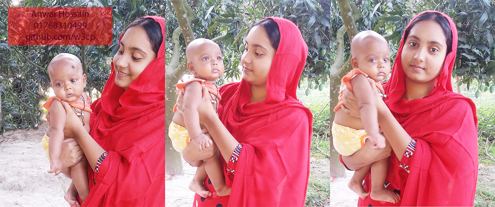

The only way to have a Friend is to be One.

পৃথিবীতে বেশিরভাগ মানুষই হুমড়ি খেয়ে পড়ে যায়। খুব অল্প কিছু মানুষ উঠে দাঁড়াতে পারে।
পৃথিবীতে বেশিরভাগ মানুষই হুমড়ি খেয়ে পড়ে যায়। খুব অল্প কিছু মানুষ উঠে দাঁড়াতে পারে।
একেকজন মানুষ যেন একেকটা বই। কোন বই সহজ তড়তড় করে পড়া যায়। কোন বই অসম্ভব জটিল। আবার কোন কোন বইয়ের হরফ অজানা। সেই বই পড়তে হলে আগে হরফ বুঝতে হবে। আবার কিছু কিছু বই আছে যার পাতাগুলি সাদা। কিচ্ছু সেখাানে লেখা নেই। বড়ই রহস্যময় সে বই।
হ্যাঁ এবং না পৃথিবীর সবচেয়ে ছোট দুটি শব্দ। কিন্তু এ শব্দ দুটি বলতে মানুষের সবচেয়ে বেশি ভাবতে হয়।
ট্টয় নগরী ধ্বংস হয়েছিলো হেলেন নামের এক নাকবোচা মেয়ের জন্য। চিন্তা করা যায়!
আমি তাকে ভালোবাসি বলে দিয়েছি। এখন সেও বাসবে কি না তা একান্তই তার নিজস্ব বিবেচনা। ভালোবাসতে কারো অনুমতি লাগে না। কাওকে সারা জীবন ভালোবাসা যায়। সেও বাসলো কি না তাতে কি যায় আসে। আমি তো বাসি। & that's it. আমি যাকে সবচেয়ে বেশি ভালোবাসি তাকে এখনো বলাই হলো না 'ভালোবাসি'। এবং ভেবেছি কোনোদিন বলবও না। তবে 'Love' & 'Attraction' এ দুটো শব্দকে একসাথে গুলিয়ে ফেলো না। Tuberty/Teenage অনেক সময় ভুল সিদ্ধান্ত বা ভুল মানুষের জন্য সারা জীবনের কান্না হয়ে যায়। '...একটা পথে ভুল একটা করুণ গল্প - একটা জীবন জানে এক জীবনের অল্প...'
'এটা গল্প হলেও পারতো- পাতা একটা আধটা পড়তাম- খুব লুকিয়ে বাঁচিয়ে রাখতাম তাকে-- জানি আবার আসবে কালকে নিয়ে পালকি পালকি ভাবনা - ফের করে যাবে চলে একলা আমাকে...'
ভালোবাসি মুখফুটে কি বলতেই হয়। কই বাবা-মা এদের কে তো কখনো বলিনা 'ভালোবাসি'।
যদি কাওকে ধোঁকা দিতে পারো, তাহলে ভেবো না সে বোকা ছিলো। মনে রাখবে সে তোমাকে বিশ্বাস করেছিলো। কিন্তু তুমি তার সেই বিশ্বাসের যোগ্য ছিলে না।
কিছু কিছু ছাত্র আছে যাদের বলা হয় আদর্শ ছাত্র। পরীক্ষায় ফার্স্ট সেকেন্ড হওয়া ছাড়াও যে কিছু হওয়া যায় তা এরা জানে না। এরা ছুটির দিনেও দরজা জানালা বন্ধ করে পড়ে। বাথরুমে যাবার সময়ও বগলে করে পড়ার একটা বই নিয়ে যায়। ঈদের দিন ভোরবেলা বিস্মিত হয়ে বলে - আজ ঈদ? জানতাম না তো? কী আশ্চর্য! এরাই পৃথিবীর সর্বশ্রেষ্ঠ মহামূর্খ। জীবনটা যে কী তা এরা আজও বোঝেনি।
কখনো কি ভেবে দেখেছো- প্রতিটা মানুষ একটা করে আলাদা ভূবন, প্রতিটা মস্তিষ্ক একটা করে জগৎ, একটা করে আলাদা সত্ত্বা, ভিন্ন ভিন্ন স্মৃতি- কত বৈচিত্রময় ভাবনা। জীবনটা আসলেই খুব সুন্দর, বড়ই সুন্দর। আমরাই একে ক্রমশ জটিল বানাই।
ক্ষুধার রাজ্যে পৃথিবী গদ্যময়,
পূর্ণিমার চাঁদ যেনো ঝলসানো রুটি।

কখনো কি মনে হয় না এই পৃথিবী আমার, এই পৃথিবী আমাদের। তাহলে আজ মানুষে মানুষে কেন এত হানাহানি?
সিগারেট হল একটা শলাকা যার একপাশে থাকে জলন্ত আগুন আরেক পাশে একটা আহাম্মক।
বাইরের দুনিয়াটা বড়ই কঠিন। ভরসা করলে নিজের ওপর করো। অন্যের আশায় বসে থেকো না। তোমার নিজস্ব একটা পরিচয় build করো।
মরুভূমির বালি ফুটফুটে সাদা- তাই বলে কি তাতে বীজ বোনার চেষ্টা করবে?
হাতের রেখায় মানুষের ভাগ্য থাকে না, মানুষের ভাগ্য থাকে তার কর্মে।
| Roll | Name | Group | Marks |
|---|---|---|---|
| 01 | Rodela | Arts | 1190 |
| 02 | Puspo | Science | 1180 |
| 03 | Sandha | Science | 1080 |
| 04 | Surovi | Arts | 1050 |
| 05 | Tithee | Commerce | 1035 |
| 06 | Beethi | Commerce | 1025 |
| 07 | Sarah | Arts | 1013 |